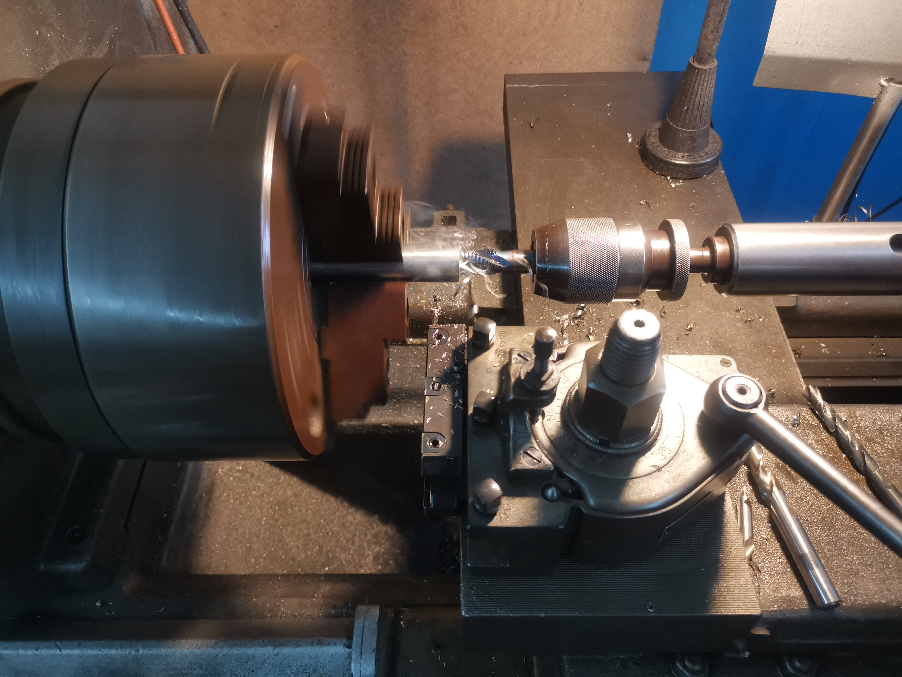
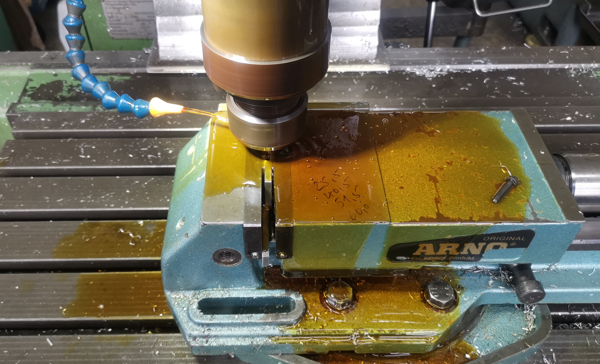
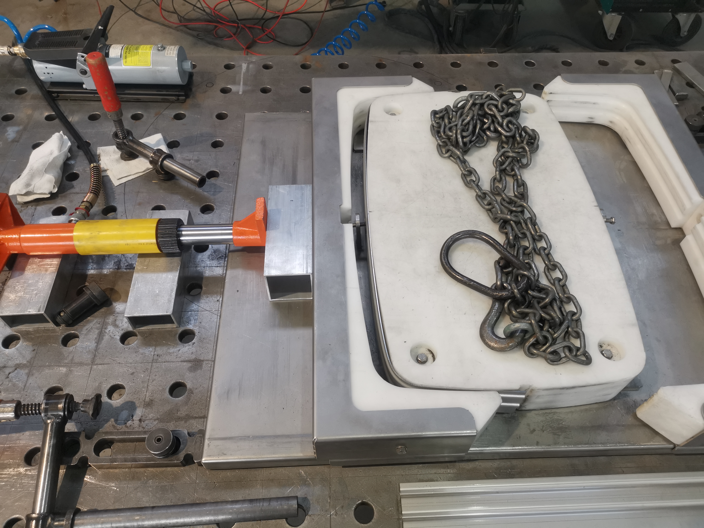
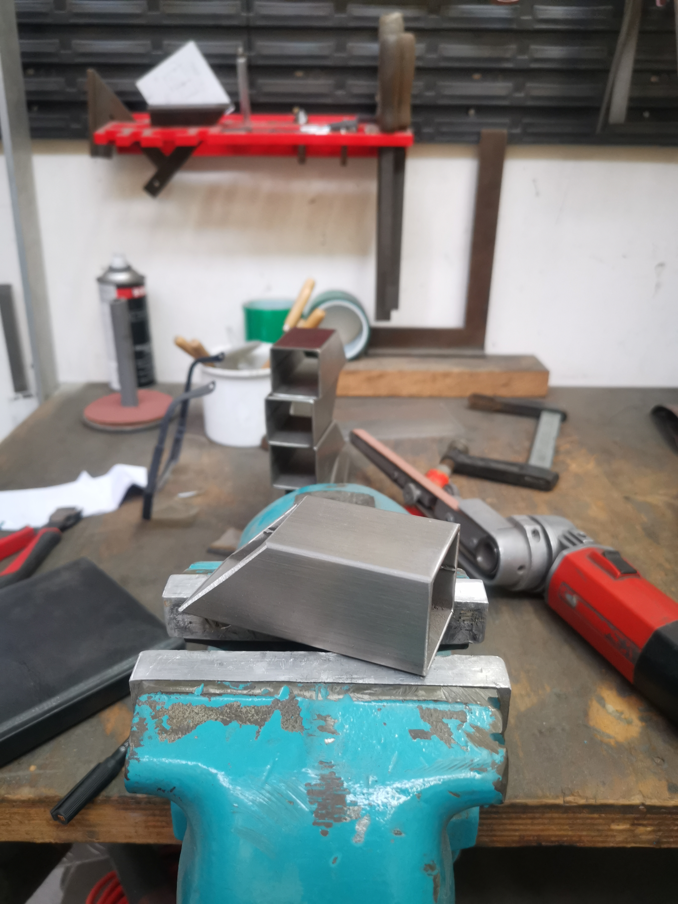
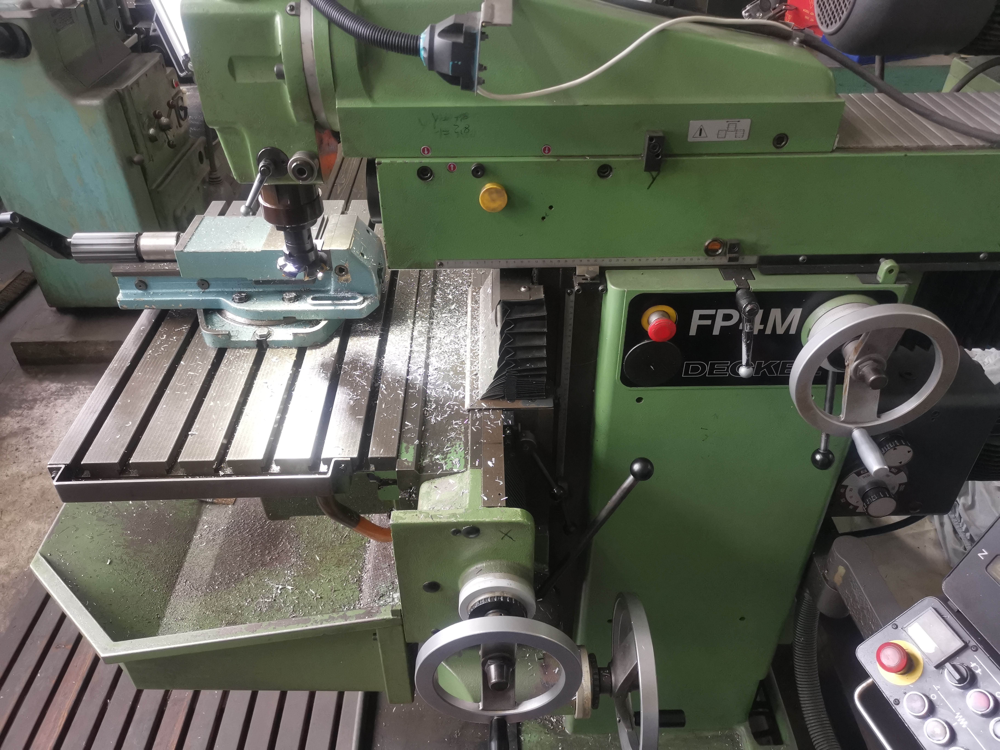
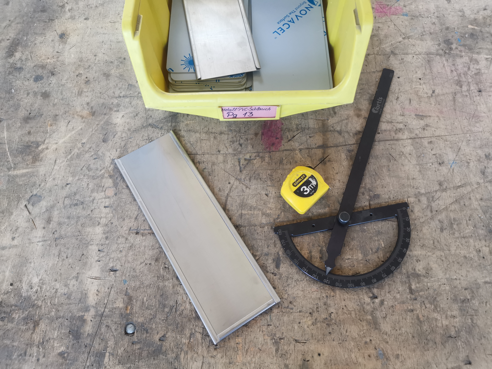
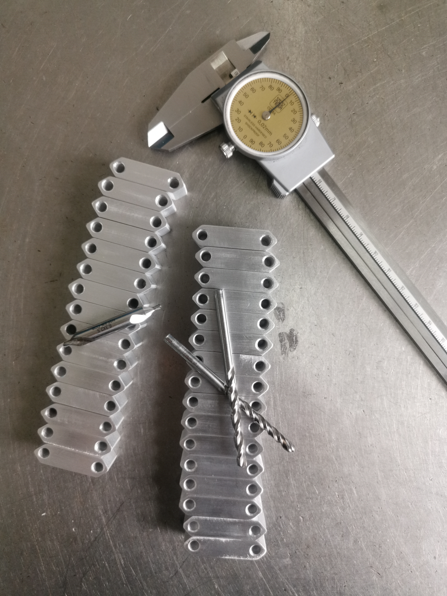

Grundpraktikum
Man muss das Unmögliche versuchen,
um das Mögliche zu erreichen.
– Hermann Hesse


Präzision im Detail – mein Grundpraktikum in der Metallverarbeitung
Sechs Wochen Schlosserei, sechs Wochen Edelstahl, sechs Wochen Praxis: Mein Grundpraktikum habe ich in einer kleinen Edelstahlschlosserei in Radolfzell am Bodensee absolviert – eine erste intensive Begegnung mit dem, was Ingenieurarbeit im Kern ausmacht: der Verbindung von Theorie und Handwerk.
Von Beginn an war der Arbeitsalltag klar strukturiert. Statt oberflächlicher Vorführungen ging es um eigenständiges Arbeiten – mit allen Wiederholungen, die zum Erlernen handwerklicher Fähigkeiten dazugehören. Feilen, Entgraten, Schleifen und Richten begleiteten mich fast täglich. Anfangs wirkten die Ergebnisse noch grob und unsauber, doch gerade diese Wiederholung machte den Fortschritt sichtbar. Mit jedem Tag wurden die Oberflächen glatter, die Kanten präziser, die Arbeitsweise kontrollierter. Kleine Handgriffe, die anfangs unnatürlich erschienen, wurden zur Routine – ein Lernprozess, den man förmlich in den eigenen Händen spüren konnte.
Besonders eindrücklich war das Schweißen. Die ersten Nähte waren unregelmäßig, voller Unterbrechungen und alles andere als schön anzusehen. Doch mit Geduld und zunehmender Übung entstanden nach und nach gleichmäßige Verbindungen, die nicht nur besser aussahen, sondern auch mechanisch belastbarer wurden. Diese Erfahrung hat mir eindrücklich gezeigt, dass Fortschritt im Handwerk weniger durch theoretisches Wissen, sondern durch konsequentes Wiederholen, Beobachten und Anpassen entsteht.
Ein zweites Highlight war das Umformen von Blechen. Schon bei der Abwicklung musste klar sein, welche Biegungen später überhaupt möglich sind und in welcher Reihenfolge man sie durchführt. Ein gedanklicher Fehler führte schnell zu einem unbrauchbaren Ergebnis. Hier lernte ich, wie entscheidend räumliches Vorstellungsvermögen ist – eine Fähigkeit, die man im Studium zwar übt, die aber erst im praktischen Arbeiten ihre volle Bedeutung zeigt.
Neben solchen „größeren“ Arbeitsschritten gab es auch viele unscheinbare Aufgaben. So habe ich unter anderem Matrizen und Stempel gereinigt – eine Tätigkeit, die auf den ersten Blick monoton wirkte, sich aber als entscheidend für die gesamte Werkstatt erwies. Ohne diese Werkzeuge wären viele andere Arbeitsschritte nicht möglich gewesen. Genau hier wurde mir klar: Ingenieurarbeit lebt von vielen kleinen, unsichtbaren Bausteinen, die zusammen das Ganze ermöglichen.
Mit der Zeit änderte sich auch meine Rolle im Betrieb. Anfangs stand das Beobachten und Nachfragen im Vordergrund, später wurde ich immer mehr zum Allrounder. Ich durfte unterschiedliche Maschinen bedienen, kleinere Projekte übernehmen und die Verantwortung für ganze Arbeitsabläufe tragen. Diese wachsende Selbstständigkeit war für mich einer der wertvollsten Aspekte des Praktikums.
Rückblickend habe ich nicht nur handwerkliche Techniken gelernt, sondern auch ein Stück weit über mich selbst. Ich habe gemerkt, wie sehr mich technisches Arbeiten motiviert – gerade weil man Fortschritte direkt sieht und spürt. Gleichzeitig wurde mir bewusst, wie viel Geduld, Präzision und Durchhaltevermögen notwendig sind, um Qualität zu erreichen. Auch der Aspekt der Teamarbeit spielte eine Rolle: Viele Arbeitsschritte erfordern Zusammenarbeit, doch eigenständiges Arbeiten und Verantwortungsübernahme waren es, die meinen Lernfortschritt letztlich geprägt haben.
Am Ende war das Praktikum weit mehr als eine Pflichtstation im Studium. Es war eine praktische Bestätigung dafür, dass Ingenieurarbeit nicht im CAD endet, sondern im Werkstück beginnt. Für mich war es die Erkenntnis, dass Fortschritt nicht nur in Formeln und Modellen sichtbar wird, sondern ganz konkret im Detail: in sauber gesetzten Schweißnähten, in präzisen Kanten, in Bauteilen, die funktionieren, weil man mit Geduld, Disziplin und Neugier daran gearbeitet hat.



Download des Praktikumsberichts
Wer tiefer in die einzelnen Arbeitsschritte, die wöchentlichen Reflexionen und die dokumentierten Lernfortschritte eintauchen möchte, findet im folgenden Dokument meinen vollständigen Praktikumsbericht.

